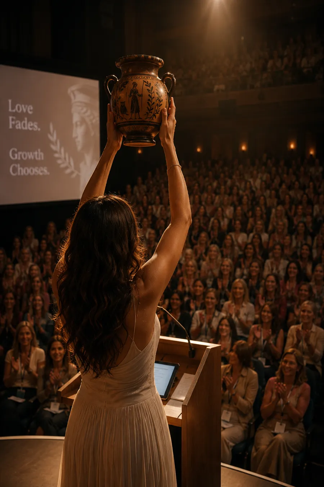
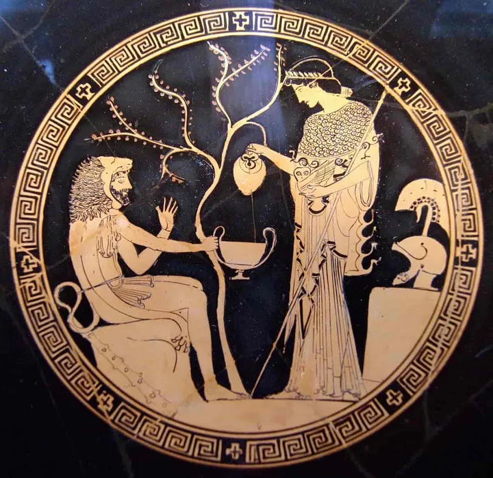

How it begins
Two birds and a question
“In the beginning, attention was abundant. We were absorbed in each other, eager for every word, every glance. It felt effortless.”
from What Happened to Us
A window, a cherry blossom tree, and two birds: one singing, one listening. The question at the heart of every relationship, Sia realizes, is not do you love me but do you see me. The book argues that attention is the currency every relationship really runs on, and the one thing we’ve been taught to be ashamed of wanting.
How it ends
The fade
“No fight. No betrayal. He said it the way people say these things now—quiet, rehearsed, apologetic. ‘I don’t feel it anymore… Nothing happened. There’s no one else. I just… don’t feel it.’”
from What Happened to Us
“Nothing happened” has become the defining breakup of a generation. No villain, no affair, just a spark that quietly went out. Most breakup books start after this moment, with recovery. This one starts with diagnosis.
What she can’t let go of
The question
“If a project fails at work, there’s a post-mortem: a whiteboard, a team, a list of lessons… If a relationship fails, you’re told: shut up, move on, stop overthinking.”
from What Happened to Us, The Library
“I debug code for a living. In all my years of bug reports, I have never been allowed to close one with nothing happened.” So she drafts an email to the man who left, types the subject line, What happened to us, and saves it as a draft until she can honestly answer it.
Where it takes her
Eleven places, one question
The novel is built as an itinerary: from Seattle’s streets to Mount Rainier, from lavish parties to a silent Himalayan monastery, and to the sunlit ruins of Greece, where she is handed the wisdom our villages knew and our cities deleted. Each place gives up one piece of the answer.
- I
A Story of Two Birds
Chapters 1–3A window, a cherry blossom tree, two birds, and the question underneath every relationship.
- II
The Library
Chapters 4–6Ten thousand books on surviving heartbreak. None on preventing it.
- III
The Launch Party
Chapters 7–13A self-made millionaire, the most beautiful woman at the party, and what happens to value when options multiply.
- IV
Mountain Trek
Chapters 14–17Mount Rainier. Snow melts under pressure, and so do people. The difference between rest and hiding.
- V
Thanksgiving
Chapters 18–21Two brothers, one town, and the discovery that independence is often dependence relocated.
- VI
The Streets
Chapters 22–26Tolerance, appetite, and the idea that nobody is addicted to substances, only to shortcuts.
- VII
A Hollywood Story
Chapters 27–32A director, a film star, and one question over dinner: what have you two built together?
- VIII
The Himalayas
Chapters 33–37A frozen waterfall, a word said out loud, and a Himalayan lesson in shrinking a desire rather than feeding it.
- IX
Pillow Talk
Chapters 38–41Rain, a fireplace, and the cost of fifteen years spent being the girl who never made it a big deal.
- X
The Greek Goddess
Chapters 42–54Athena, a broken-down car, and a stranger’s kitchen where the argument finally turns.
- XI
The Auditorium
Chapters 55–60A thousand women, two men at the back of the room, and an answer delivered out loud.
- ?
Find out what happened
Sixty short chapters, one question, and an answer worth arguing about.
Buy on Amazon


What she brings home
The framework
What she brings home is bigger than an answer: an engineer’s framework of modern love, assembled piece by piece and delivered on a stage before a thousand women, with the two men she loved in the crowd.
“Love that is only consumed burns down. Love that is built compounds.”
from What Happened to Us